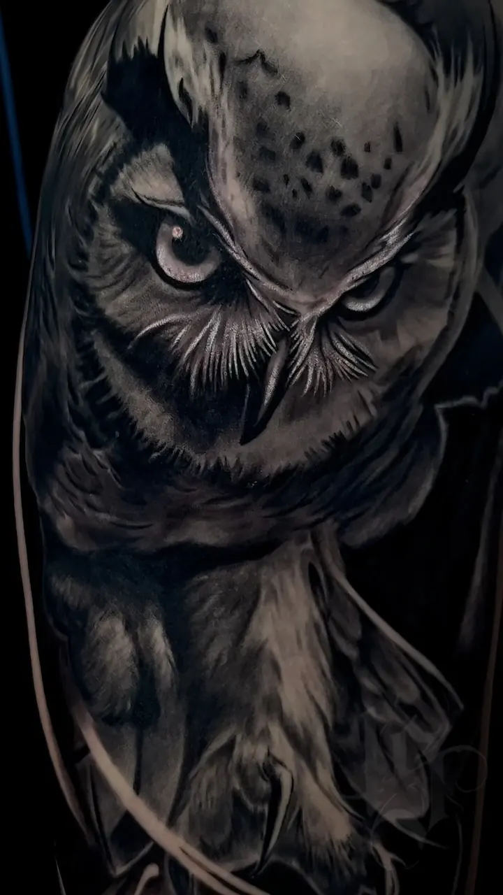

Надеждатонкие линии и цвет
Превращает размытую идею в чистый аккуратный эскиз. Хороший выбор для первой тату.
Тату-студия INKSIDE в Минске
Два мастера, у каждого больше 8 лет опыта. Не знаете, к кому? Напишите идею, подскажем.
Нажмите стиль: подсветим мастера. Не уверены - напишите идею, подскажем.




Оба делают мини и небольшие работы. Если идея пока размытая, хороший выбор - Надежда: она превращает размытую идею в чистый аккуратный эскиз.
Рукава и ноги - специализация Виталия, большие проекты делает и Надежда. Крупный проект мастера могут вести в четыре руки.
Оба мастера. Виталий берётся за сложные перекрытия, Надежда делает перекрытия и коррекцию старых работ.
Нет, прайс студии общий: от 180 BYN за работу до 1 часа, каждый следующий час 150 BYN.
Проще всего - по стилю, который вам нравится:
Если сомневаетесь, просто напишите идею в Telegram: подскажем, кому из мастеров она ближе. Консультация бесплатная.
Крупный проект мастера могут вести вместе. Так ногу целиком сделали за 2 дня. Это удобно для больших работ: меньше визитов, а сюжет остаётся цельным. Подробнее - на странице тату рукав.
Стерильность и безопасность на первом месте: иглы одноразовые и вскрываются при вас.
Прайс студии общий: от 180 BYN за работу до 1 часа, каждый следующий час 150 BYN, эскиз от 40 BYN, консультация бесплатно. Подробнее - на странице цен на тату.
Напишите идею в Telegram: подскажем, кому из мастеров она ближе. Консультация бесплатная.

 Тату рукавуслуга
Тату рукавуслуга Цены на татууслуга
Цены на татууслуга Перекрытие татууслуга
Перекрытие татууслуга Коррекция татууслуга
Коррекция татууслуга Тату портретуслуга
Тату портретуслуга Главнаястудия
Главнаястудия